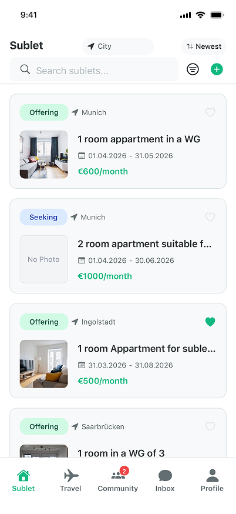
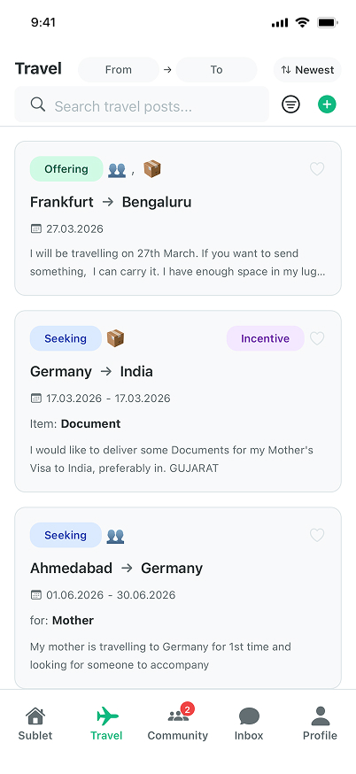
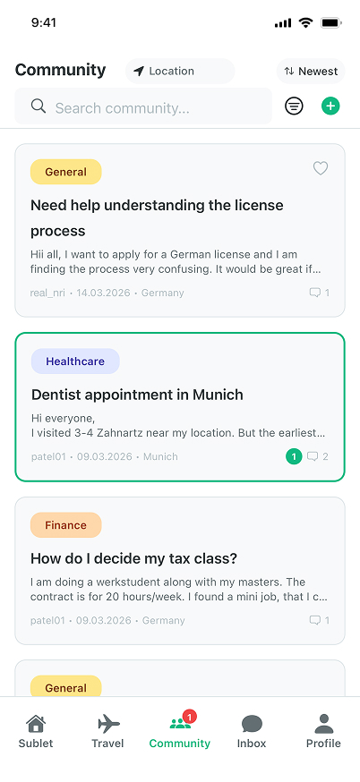

Find housing, travel support, and real help from people who understand your situation.
You eventually find a solution. But it takes time, effort, and sometimes a bit of luck.
It works. But it should not be this hard.
There should be a simpler way.


